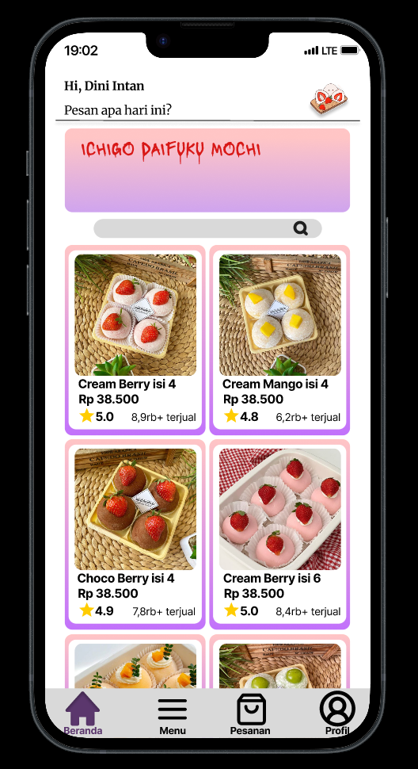
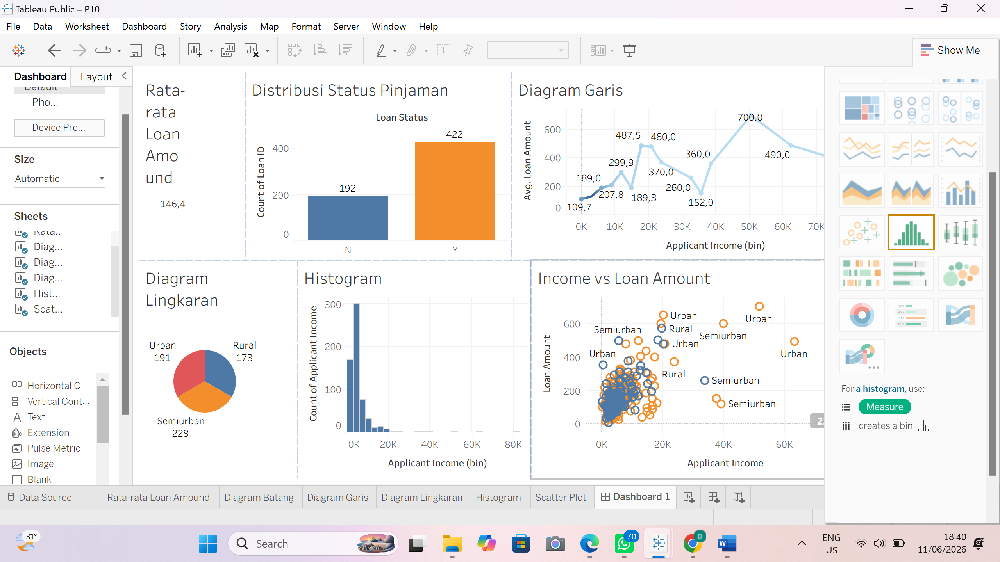

Mahasiswa Sistem Informasi
Data • UI/UX • Technology
Halo! Saya Dini, mahasiswa Sistem Informasi yang tertarik dengan bagaimana teknologi dapat digunakan untuk membuat sesuatu menjadi lebih mudah dipahami dan digunakan.
Saya menikmati proses membuat desain antarmuka menggunakan Figma, mengolah dan memvisualisasikan data, serta mencoba berbagai hal baru di bidang teknologi. Beberapa hal tersebut saya kembangkan melalui proyek perkuliahan dan pengalaman organisasi maupun kegiatan lainnya.
Portfolio ini menjadi tempat saya mengumpulkan proses belajar, proyek, dan pengalaman yang pernah saya kerjakan.
Proyek perancangan tampilan aplikasi Mochi yang berfokus pada pembuatan antarmuka yang sederhana, nyaman digunakan, dan mudah dipahami oleh pengguna. Dalam proyek ini, saya merancang beberapa tampilan aplikasi dengan memperhatikan tata letak, pemilihan warna, dan konsistensi visual agar tampilan aplikasi terlihat lebih terstruktur dan menarik.
Peran: UI/UX Designer
Tools: Figma
Lihat Desain Figma
Proyek analisis data persetujuan pinjaman rumah (Home Loan Approval) menggunakan Tableau untuk mengolah dan memvisualisasikan data pengajuan pinjaman. Hasil analisis disajikan dalam bentuk dashboard interaktif untuk membantu melihat pola, informasi, dan hasil persetujuan dari data pengajuan pinjaman.
Peran: Data Analyst
Tools: Tableau

Agustus 2026
Selama menjalani kegiatan magang di PT Era Supplier Indonesia, saya terlibat dalam pembuatan materi visual untuk kebutuhan media sosial perusahaan. Saya menggunakan Canva serta memanfaatkan tools berbasis AI sebagai pendukung dalam proses pembuatan konten dan materi promosi sesuai kebutuhan perusahaan.
2021 - Sekarang
Membantu kegiatan operasional usaha keluarga di bidang konveksi, khususnya dalam proses pengemasan dan pengecekan produk sebelum pengiriman serta memastikan pesanan dikemas dengan rapi dan sesuai.
2024 - Sekarang
Selama bergabung dalam Novo Club, saya berpartisipasi dalam berbagai kegiatan diskusi, pelatihan, dan aktivitas komunitas. Saya juga terlibat dalam kegiatan Bebas Plastik serta bekerja sama dengan anggota lainnya dalam berbagai kegiatan, sehingga membantu mengembangkan kemampuan komunikasi dan kerja sama tim.
November 2025 - Mei 2026
Sebagai pengajar Coding Scratch, saya membimbing siswa sekolah dasar dalam mempelajari dasar-dasar pemrograman menggunakan Scratch. Saya membantu menyampaikan materi, memberikan contoh sederhana, serta mendampingi siswa selama kegiatan praktik dan membantu ketika mengalami kesulitan.
Punya pertanyaan atau ingin berkolaborasi? Silakan hubungi saya melalui email atau WhatsApp.